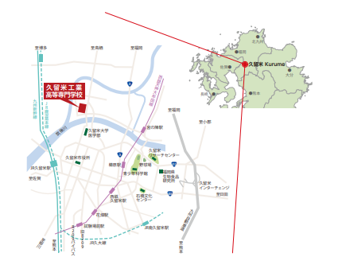
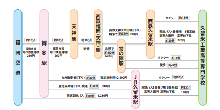

ホーム
ホーム 日程
日程 出店
出店 展示
展示 活動の様子
活動の様子 アクセス
アクセス※注意※
▼宝の地図を手に入れた！
公共交通機関でのアクセス方法
1.JR博多駅→特急３０分→JR久留米駅 JR久留米駅から西鉄バス８番｢高専｣行きに乗車→１２分→高専前、またはタクシーで８分
2.福岡空港 → 高速バス４５分 → 西鉄久留米バスセンター 西鉄バス４番のりばから８番｢高専｣行きに乗車 → ２０分 → 高専前、またはタクシーで１２分
3.西鉄大牟田線福岡駅→ 特急３０分 → 西鉄久留米駅 西鉄バス４番のりばから８番｢高専｣行きに乗車 → ２０分 → 高専前、またはタクシーで１２分
4.西鉄大牟田線福岡駅→急行４５分→宮ノ陣駅 タクシーで６分(徒歩２５分)
5.自家用車→九州自動車道久留米ICから国道210号線経由で20分
© 2019 久留米高専 高専祭実行委員会 NIT,Kurume College
管理者：久留米高専 高専祭実行委員会
お問い合わせ：